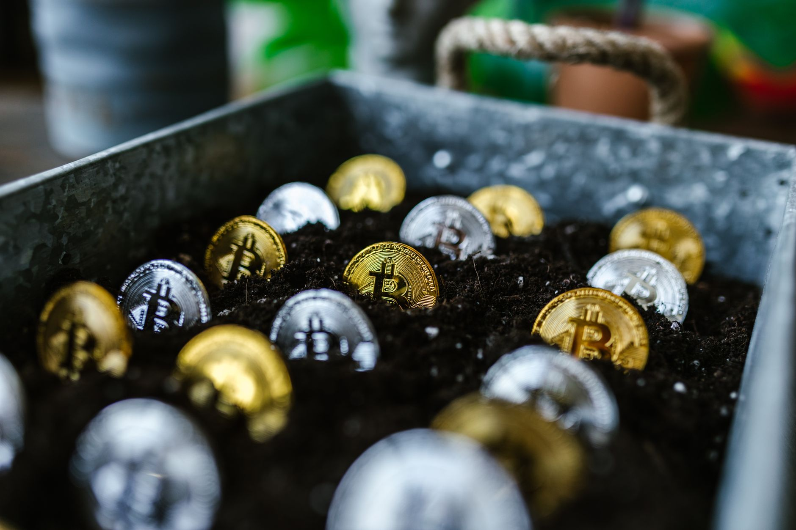

Silver works as emergency money because it carries value without a counterparty, splits into small barter-sized units, and stays liquid when banks freeze or currencies collapse. A pre-1965 US dime holds about 2.25 grams of silver (Source: APMEX Learning Center), which makes it spendable for a tank of gas or a bag of groceries when card networks go dark. You do not need a brokerage account, a password, or a power grid to use it.

We stock the exact formats that work for emergency reserves: junk silver dimes and quarters, one ounce rounds, and recognizable sovereign coins. This guide shows you why silver fits the emergency role, what to buy, and how much to hold before you need it.
Why Silver Holds Up When Paper Money Fails
Paper currency runs on trust. When that trust breaks, the value goes with it. During Venezuela's 2018 episode, annual inflation passed 130,000%, wiping out bank balances and cash savings while precious metals kept their purchasing power (Source: Hyperinflation in Venezuela, citing IMF data). People who held silver and gold could still buy food. People who held bolivars could not.

You do not need a full currency collapse for silver to matter. A regional bank failure, a multi-day power outage, a ransomware attack on a payment processor, or a frozen account during a fraud review all produce the same problem: you cannot access your money. Silver sitting in a safe at home is not subject to any of those failures. It does not need an internet connection. It does not need approval from a bank officer.
This is the core difference between physical metal and digital balances. A checking account is a promise. An ETF share is a promise. A stablecoin is a promise. Silver in your hand is the asset itself. No middleman can freeze it, devalue it overnight by printing more, or lock you out for "suspicious activity."
The Divisibility Problem Gold Cannot Solve
Gold is excellent for storing large amounts of wealth in small space. It is terrible for buying eggs. A one ounce gold coin is worth more than most weekly grocery bills, and you cannot make change for it in a crisis.
Silver solves this. A 90% silver dime minted before 1965 contains about 2.25 grams of pure silver (Source: APMEX Learning Center). At common silver prices, that dime trades for a few dollars of real purchasing power. A quarter is roughly 5.6 grams. A half dollar is 11.25 grams. You can assemble payments at the size of a meal, a fuel fill-up, or a week of supplies without overpaying or asking a seller to make change in metal they may not have.
This is why we tell first-time emergency buyers to start with junk silver before they buy bullion bars. A $500 face value bag of pre-1965 dimes gives you 5,000 individual spendable units. A single 100 ounce bar gives you one unit. In a barter situation, the bag wins every time.
Practical starter mix for a single adult:
- $100 face value in 90% silver dimes and quarters for small transactions
- Twenty to thirty one ounce silver rounds or generic bullion coins for medium trades
- Five to ten recognizable sovereign coins (American Silver Eagles or Canadian Maple Leafs) for larger settlements or eventual resale
That stack covers transactions from a few dollars to a few thousand without forcing you to break a large piece of metal.
Most US Households Are Not Ready
FEMA's 2023 National Household Survey found only 51% of US adults believe they are prepared for a disaster (Source: FEMA National Household Survey). Roughly half of households have no meaningful emergency reserves. That number tracks closely with the share of Americans who cannot cover a $400 surprise expense from savings.
If a regional disruption hits, those households will be competing for the same cash, fuel, and food at the same time. ATM networks throttle. Card readers go offline. Stores switch to cash only, then to barter, then to closed. The window where silver becomes useful opens fast and closes fast.
You do not need a doomsday scenario to justify a small silver reserve. Hurricane Helene in 2024 left parts of western North Carolina without working banks or card networks for weeks. Texas saw the same thing during the 2021 freeze. The pattern repeats every year somewhere in the country.
A reasonable rule: hold enough silver to cover four weeks of essential spending for your household at a 50% premium over normal prices, because emergency pricing always runs hot. For a family of four, that usually works out to between $1,500 and $3,000 in face value silver, depending on where you live.
Silver Is Structurally Scarce Right Now
Emergency money only works if the asset behind it holds value over years, not just days. Silver's supply picture is the strongest argument that today's prices are not a peak.
The global silver market posted a 148.9 million ounce deficit in 2024, the fourth consecutive year of structural shortfall (Source: The Silver Institute). Industrial demand from solar panels, electronics, and electric vehicle production keeps pulling ounces out of available inventory faster than mines can replace them. Above-ground stockpiles have been drawn down four years running.
Retail demand is rebuilding on top of that tight base. Physical silver coin and bar investment is forecast to rise 20% to a three-year high in 2026 as Western buyers return amid macroeconomic uncertainty (Source: The Silver Institute). When retail demand accelerates into an already short market, premiums on small retail units rise first and fastest. The time to assemble an emergency stack is before that surge, not during it.
In April 2025 the gold-to-silver ratio exceeded 100:1 for only the third time in modern history (Source: USAGOLD). That ratio measures how many ounces of silver one ounce of gold buys. The historical average sits closer to 60:1. When the ratio runs this wide, silver is cheap relative to gold by any long-term measure. Buyers who accumulate during these stretches tend to do well when the ratio reverts.
How Much to Hold and What to Avoid
Treat your silver reserve as insurance, not as a primary investment. A common allocation for emergency-focused buyers is 5% to 10% of liquid net worth in physical precious metals, weighted roughly 70% silver and 30% gold. Silver does the day-to-day work. Gold compresses larger wealth into smaller space.
What to buy:
- Pre-1965 US 90% silver dimes, quarters, and half dollars (junk silver)
- One ounce silver rounds from recognized private mints
- One ounce American Silver Eagles, Canadian Maple Leafs, or Austrian Philharmonics
- Ten ounce bars from major refiners for the back of the stack
What to avoid for emergency use:
- Numismatic or "collector grade" coins with high premiums over melt value
- Silver certificates, pool accounts, or unallocated storage products
- Anything sold over the phone after an unsolicited call
- Mystery boxes, mixed lots from unknown sellers, and any coin that cannot be verified by weight and dimension
If you cannot pick the coin up and read it, it is not emergency money. The whole point is removing counterparty risk. A piece of paper saying you own silver in a vault halfway across the country fails the moment you actually need the metal.
Storage That Actually Works
Buying silver is the easy part. Storing it so you can reach it during a real emergency takes a small amount of planning.
Split your stack into at least two locations. A home safe bolted to the floor or framing handles the working portion, the metal you would actually spend or trade in a crisis. A secondary location, a bank safe deposit box, a fireproof safe at a trusted family member's home, or a private vault, holds the long-term reserve.
Keep the home portion in original mint tubes or in a labeled container with a simple inventory sheet listing face value and ounce count. You want to be able to grab a known quantity in the dark without counting individual coins. A silica gel pack inside the container handles humidity and prevents milk spots on bullion.
Tell exactly one trusted person where the secondary stash sits and how to access it. Do not post about your holdings online, do not discuss specific amounts with neighbors, and do not store silver in the obvious places a burglar checks first: master bedroom dresser, office desk, hall closet.
Building the Reserve Without Overpaying
US retail investors purchased a combined 1.5 billion ounces of physical silver between 2010 and 2024 (Source: Metals Focus / Silver Institute Market Trend Report). That is not speculative trading. That is households making the same calculation you are making now.
The buyers who built their stacks deliberately, in small monthly purchases over years, paid average prices well below today's level and avoided the premium spikes that hit during 2020 and 2022. The buyers who waited until a crisis was already in the headlines paid 30% to 80% over spot for small units, when they could find them at all.
A simple approach: set a fixed monthly budget, $100 to $500 depending on your situation, and buy the same mix every month regardless of price. Add junk silver until you hit your target face value. Then add rounds and sovereign coins. Then add bars. Check your premiums against spot before every order, and walk away from any dealer who will not show you the math.
We stock all of these formats at transparent premiums, and we publish the spot calculation on every product page so you can see exactly what you are paying for the metal versus the markup. Start your reserve at the size that fits your household, add to it on a schedule you can sustain, and put the first order in this month rather than waiting for the news to tell you it is time.
Related
- Is Silver A Good Hedge Against Inflation?
- Silver ETF Vs Physical Silver Tax Differences
- Physical Silver Vs Silver Etf Pros And Cons
Read next: Is Silver A Good Hedge Against Inflation?